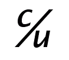

Abreviaturas comerciales
Su tratatamiento ortotipográfico
Desde hace mucho tiempo, en el sistema ortográfico del español tenemos lo que se conoce como abreviaturas comerciales, y que también encontramos en otras lenguas. Se caracterizan porque se forma con una barra, bien sea tras una letra o entre dos letras: c/u, s/f. Las abreviaturas comerciales (aunque en realidad no todas son comerciales) apenas ha evolucionado y se mantiene un repertorio más o menos fijo.
 Estas abreviaturas tienen su origen en manuscritos comerciales, donde no era complicado escribir letras más pequeñas y volar la que precedía a la barra. Esta disposición se mantiene viva en lo manuscrito, sobre todo en c/u («cada uno», que incluso recoge Unicode, derecha), y hasta no hace mucho se solía respetar también en formularios y estadillos impresos. Lo tradicional ha sido trasladar la forma manuscrita a lo impreso, sin punto, pero Martínez de Sousa propone añadirselo al final (c/u.) y Euniciano Martín tras cada letra (c./u.). Puesto que la barra ya es suficiente diacrítico y el punto ya tiene muchos usos, parece preferible mantener la coherencia entre las formas manuscrita e impresa y preservar la forma tradicional sin punto; de hecho, la tendencia actual es eliminar los puntos donde no hacen falta (siglas, símbolos) y no añadirlos donde normalmente no se han considerado necesarios.
Para poder usar las abreviaturas comerciales en lo impreso se necesitaba tiempo y esfuerzo adicional, ya que no se contaba con ellas ya fundidas. Eso podría explicar que, salvo en remendería, se simplificase la forma de componerlas. Pero ahora los medios digitales permiten manipular con mucha más facilidad los tipos y podría ser el momento de considerar la posibilidad de recuperar la forma genuina de las abreviaturas comerciales.
¿Merece la pena esta recuperación? ¿O ya se ha asentado definitivamente la grafía simplificada? Son preguntas que dejo abiertas.